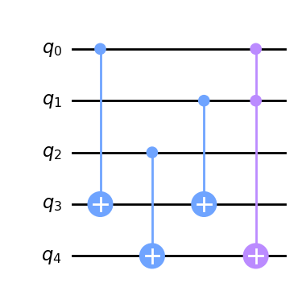

Exporting to other frameworks
Qlasskit implements circuit / gate exporters for Qiskit, Cirq, Qasm, Sympy and Pennylane.
from qlasskit import Qint2, qlassf
@qlassf
def hello_world(a: bool, b: Qint2) -> Qint2:
return b + (1 if a else 0)
Qiskit
qc = hello_world.export("qiskit")
qc.draw("mpl")
/opt/hostedtoolcache/Python/3.10.13/x64/lib/python3.10/site-packages/qiskit/visualization/circuit/matplotlib.py:266: FutureWarning: The default matplotlib drawer scheme will be changed to "iqp" in a following release. To silence this warning, specify the current default explicitly as style="clifford", or the new default as style="iqp".
self._style, def_font_ratio = load_style(self._style)

QASM
qc = hello_world.export("qasm")
print(qc)
OPENQASM 3.0;
gate hello_world a b.0 b.1 _ret.0 _ret.1 {
cx a _ret.0
cx b.0 _ret.0
cx b.1 _ret.1
ccx a b.0 _ret.1
}
Cirq
import cirq
qc = hello_world.export("cirq")
qc
0: ───hello_world───
│
1: ───hello_world───
│
2: ───hello_world───
│
3: ───hello_world───
│
4: ───hello_world───Pennylane
import pennylane as qml
tape = hello_world.export("pennylane")
tape
<QuantumTape: wires=[0, 3, 1, 2, 4], params=0>
Sympy
qc = hello_world.export("sympy")
qc
\[\displaystyle C_{0,1}{\left(X_{4}\right)} \text{CNOT}_{2,4} \text{CNOT}_{1,3} \text{CNOT}_{0,3} {\left|00000\right\rangle }\]